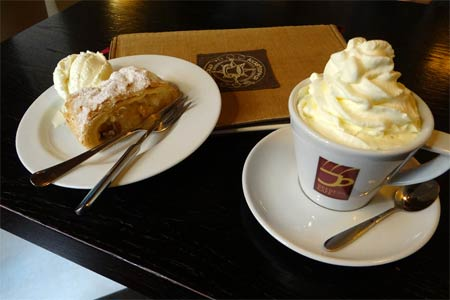

Cafeau Engleza

Englezii sunt renumiți ca iubitori de ceai, dar pe lângă această băutură, locuitorii din Misty Albion iubesc și cafeaua. Mai mult, au propria rețetă specială pentru prepararea cafelei. Cafeaua engleză este pregătită destul de simplu, pentru aceasta este necesar să folosiți doar ingrediente speciale, care fac ca băutura să fie specială. Pentru a face cafea engleză, trebuie să luați smochine, precum și cafea columbiană și indiană.